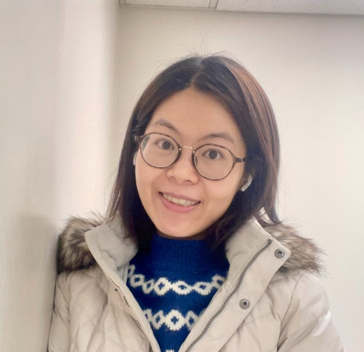

Assistant Professor · Yukawa Institute for Theoretical Physics · Kyoto University
Soft and architected materials
I study how geometry and topology organize material responses in soft and architected materials.

About
Xinyu Wang
I am an Assistant Professor at the Yukawa Institute for Theoretical Physics, Kyoto University. My research combines mechanics, topology, symmetry, computation, and soft matter to understand and design materials with programmable mechanical response.
My path into physics and soft materials began in engineering. I received both my B.S. and Ph.D. in Civil Engineering from Southeast University, and spent two years as a visiting Ph.D. researcher in Physics & Astronomy at the University of Pennsylvania. I then moved into physics through postdoctoral research at HKUST and the University of Michigan before joining YITP. This interdisciplinary path continues to shape how I approach mechanics, materials, and soft matter.
YITP, Kyoto University
University of Michigan
HKUST
Southeast University
Southeast University
Research
Explore my research
My work spans topological mechanics, nonlinear and kirigami-based mechanics, soft and programmable materials, and architected materials.
Collaboration
Collaborations are welcome
I enjoy working across disciplinary boundaries and welcome conversations with researchers interested in mechanics, soft matter, topology, liquid crystals, metamaterials, and related areas.
If you see a connection between your work and mine, please feel free to get in touch.
Opportunities
Join the research
I have projects for undergraduate, master's, and Ph.D. students, and I am also interested in working with postdoctoral researchers.